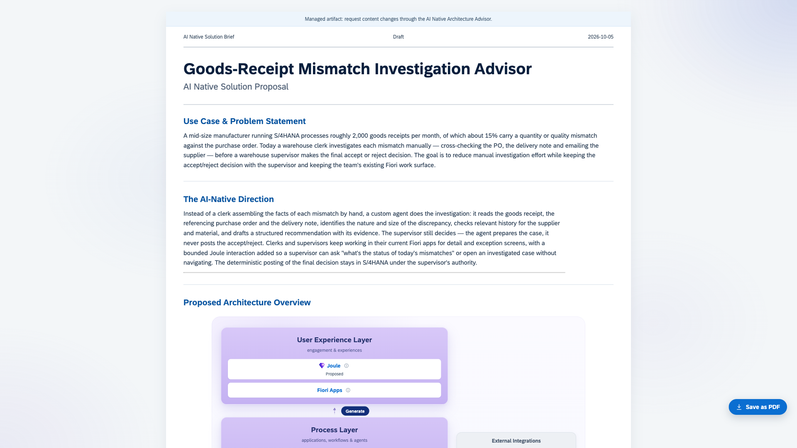
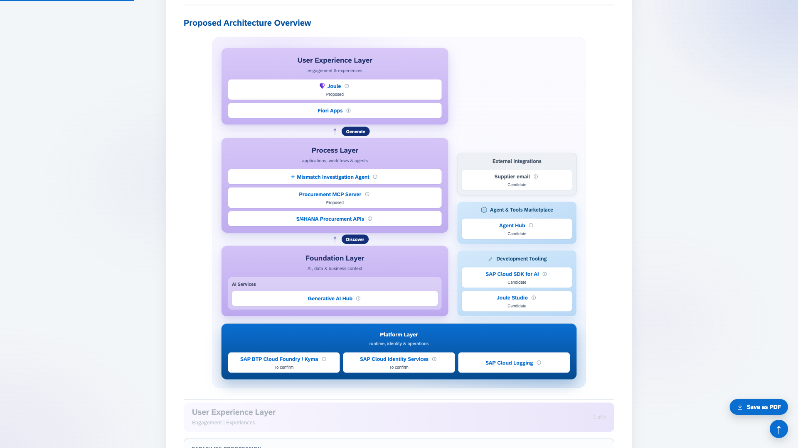
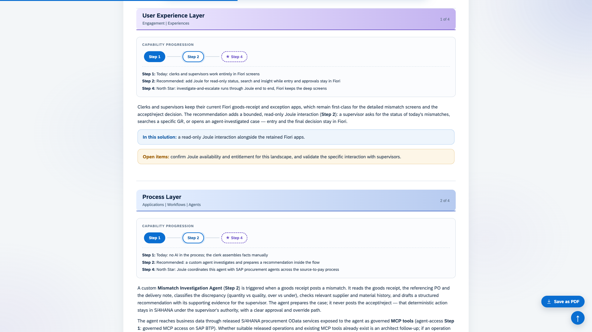
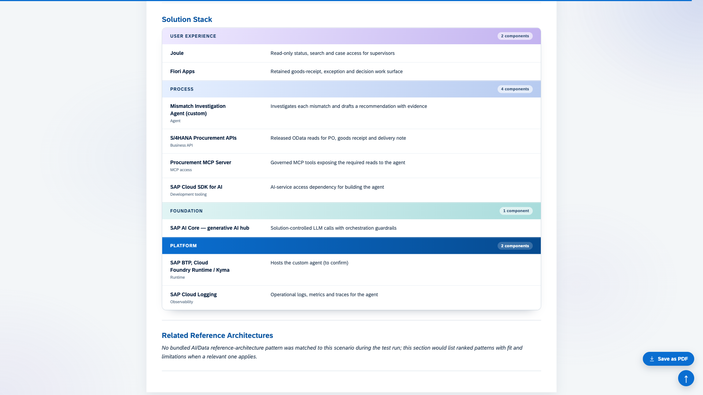

Reimagine an SAP use case for the AI-native era
Describe the business problem, explore the options with the Advisor, and build an AI Native Solution Brief with a proposed architecture and a visual HTML report.




Drag the top card
What it is
Initial high-level solution design, grounded in SAP's AI-native North Star
The Advisor asks only the questions that materially affect the architecture, separates confirmed facts from assumptions, and explains the value and trade-offs of each proposed change. Keeping a suitable existing design is a valid recommendation.
From a described problem to a reviewed proposal
You start with the problem, actors, desired outcome and any constraints you already know. You do not need a complete technical design.
Describe
Start with the business problem
Bring the actors, the desired outcome and any constraints. Confirm or correct the Advisor's assumptions as it works.
Explore
Explore the options together
The Advisor maps the scenario to SAP reference architectures and explains the trade-offs, strongest fit first.
Build
Build the solution brief
Get a brief, a reasoning log and a visual HTML report you can open directly in a browser. Continue the conversation to revise.
See it work
From a described problem to a visual brief
A short walk through a generated brief: the use case, the four North Star layers, the capability progression and the solution stack.
Each scenario gets its own folder with three files
Markdown is the content source. Continue the conversation to revise it, and the Advisor regenerates the HTML.
OUTPUT 01
<slug>-solution-brief.html
Visual report
A visual proposal that opens directly in a browser. No web server required; it loads no remote fonts, scripts or images. This is the artifact you share.
OUTPUT 02
<slug>-solution-brief.md
Solution brief
Use case, AI-native direction, proposed architecture, capability progression, solution stack and relevant reference architectures.
OUTPUT 03
<slug>-reasoning-log.md
Reasoning log
Facts, assumptions, decisions, source checks and open questions, kept separate from the proposal.
Grounded in SAP
Built on SAP's own architectural guidance
The skill combines content and guidance from SAP's published architecture sources, shipped with the plugin as dated reference data.
AI-native North Star architecture
The architectural vision and the User Experience, Process, Foundation and Platform layers.
AI Golden Path
AI and development approaches for the scenario, as a commit-pinned text snapshot.
Architecture Center reference architectures
Implementation patterns, selected and explained by the agent according to their fit.
A draft for human review, not an approved design
This is initial high-level solution design for solution and enterprise architects and business teams. It is not a PRD, a functional specification or a detailed technical design. Field-level requirements and configuration are left for later design.
AI can hallucinate services, capabilities, integrations and references. Check recommendations against current SAP documentation and your actual landscape, availability, entitlements and security requirements before you use the proposal.
Get started
Install and use
One shared skill powers both hosts. Install through one route per host to avoid duplicate skill entries.
Claude Code
Run these inside Claude Code, then reload plugins or start a new session.
Codex
Run these in your terminal, then start a new Codex thread.